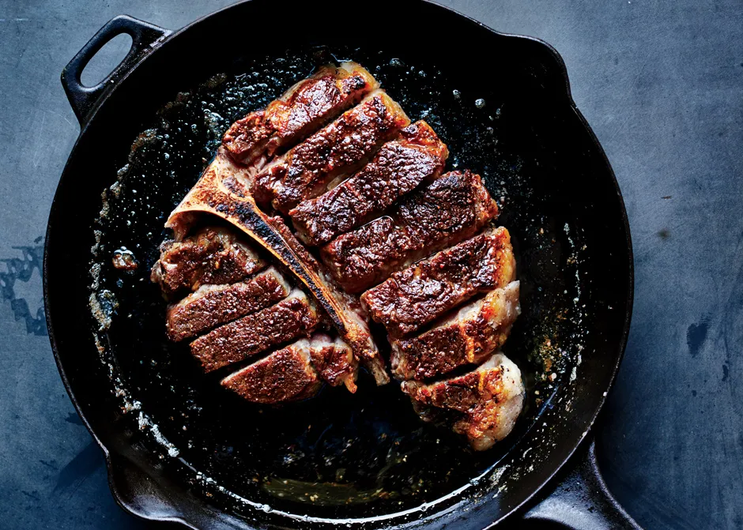

Steak

Description
Mouth-watering juicy rare steak
If you're a lover of meat, you have to try this out.
Ingredients
- Your favourite cut of steak
- Cooking oil with a high burn point, such as sunflower oil
- Salt and pepper
Steps
- Season your steak with salt and coarsely ground pepper
- Oil to your pan and bring it to a medium-high heat
- Once the oil is shimmering and hot enough, add the steak
- Cook for 3 minutes on either side, basting the steak frequently in it's own juices and cooking oil
- Remove the steak from the pan and let it rest for 5 minutes at least
- Enjoy your efforts and tuck into that tasty steak